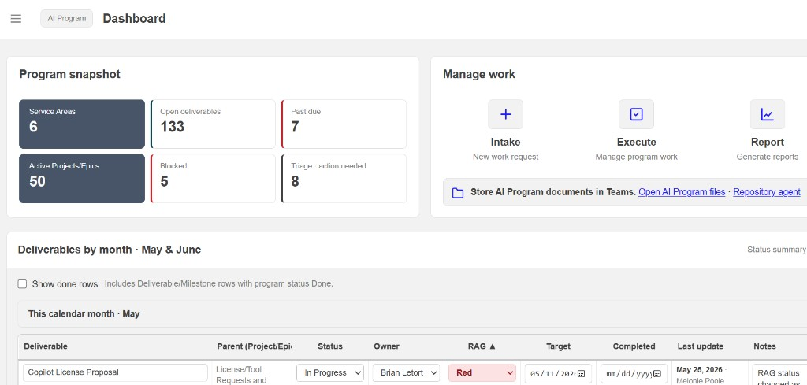

← → or Space · builds on 4–6, 8, 10
I lead the structure, the stories, and the standards. AI helps me get it done.
Accelerate the work. Don’t dilute the craft.
Melonie Poole · PMI Chapter · August 2026
Quick intro
Last year was prompts that saved hours. This year I also pull stories across sources — and build when nothing fits. ATLAS is that story. I do this for a living. Tonight I’ll share what’s been useful.
Quick frame
We already lived this with PowerPoint and spreadsheets — more slides didn’t mean more clarity. Same risk, faster.
Deloitte State of AI in the Enterprise 2026: ~74% plan agentic AI use; 21% report mature agent governance
What I keep coming back to
86% of AI users say they treat AI as a starting point — not the final answer. If nobody in the room can explain the update, we have a trust problem.
Microsoft Work Trend Index 2026
How I work
Something on my plate this week.
If it’s wrong, I fix it. If it isn’t helping, I stop.
Copilot day-to-day · chat to think · Cursor when I build.
What it needs to do — then build — then review. That’s how ATLAS got built.
Start on real work. Fix it or stop — don’t send a draft you haven’t read.
Notes, email, Word, Teams — daily work. Watch for confident-sounding mistakes in mail.
Thinking something through or pulling a story across sources.
Building — write what you need first, then review hard.
Use what your org allows. Same quality bar on every tool.
Too many notes, decks, and threads. AI gives me a draft. I decide what leadership hears.
Starting out: meeting notes → action table. Check every row before you send it. Here’s how that showed up for our VMO — ATLAS.
How we manage, track, and report
For our VMO — commitments, health, and status in one place.
Monday pulse is live data now. AI helped me build faster. The specs are why people trust it.

Next — Cursor. Watch for the moment I cut something that’s wrong.
Live demo
Not every Cursor button — how I check the work before I use it.
The craft moment isn’t the prompt. It’s the edit. Same discipline that shipped ATLAS.
ATLAS is my capstone for partnering with AI. Before questions — pick one this-week action. Write it down or drop it in chat.
Accelerate the work. Don’t dilute the craft.
Connect: LinkedIn · Chromatic Guide
AI can accelerate the work. You still own the judgment, the story, and the standard.